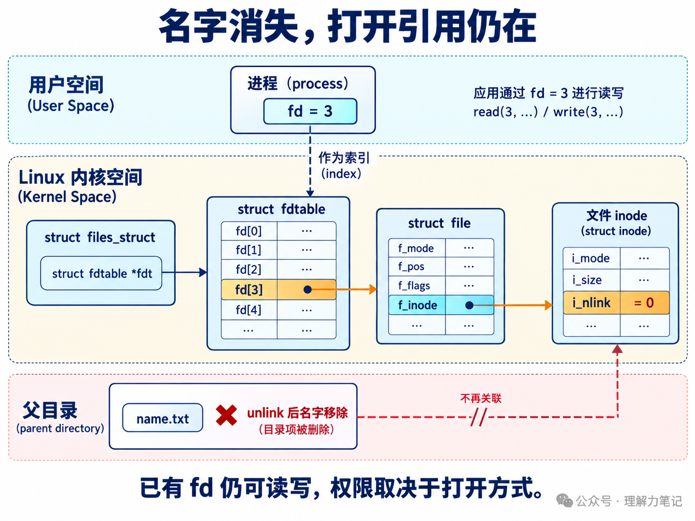

unlink 与 rmdir：删除文件和目录为什么要分开？unlink("empty") 删除一个空目录，失败；换成 rmdir("full")，目录里还有文件，也失败。写清理程序时，知道目标“存在”还不够，还要决定自己允许删除哪种对象。
结论： 在 Linux 中，删除普通文件、符号链接等非目录对象的名字用
unlink，删除空目录用rmdir。两者成功返回 0，失败返回 -1 并设置errno。rmdir不会递归删除内容；unlink移除一个名字，文件数据是否还能访问，要看是否还有其他硬链接或打开引用。
这篇文章怎么读？
想选对接口并看错误结果，读第一章；想弄清“名字没了，文件怎么还在”，看第二章的对象图和 fd 实验。
| 你是谁 | 看哪一章 | 会得到什么 |
|---|---|---|
| 搜索者 / 被推荐者 | 第一章 · 先解决问题 | 单文件、空目录和符号链接的删除方式 |
| 学习者 | 第二章 · 机制解释 | 目录项、inode、打开引用各自的生命周期 |
| 编程者 | 第三章 · 工程使用 | 删除权限、失败策略与路径竞态边界 |
| 求职者 | 第四章 · 面试提炼 | 说清非空目录限制与删除后仍可读 |
下面的程序让调用者明确选择操作，不先查询类型再替调用者决定。保存为 delete_entry.c，在新建的实验目录里运行，路径都指向下面创建的样本。
unlink 和 rmdir 都是 POSIX 接口，声明在 <unistd.h>。remove 则是 <stdio.h> 中的 C 库接口，后面会说明它在 Linux 上如何统一这两类操作。
本次运行环境为 macOS 14.8.8、Darwin 23.6.0 x86_64、Apple clang 16.0.0，严格编译无警告。Linux 行为另用手册和 v6.6 源码核验，没有把本机输出写成 Linux 实测。
这些命令包含故意触发的失败，逐条执行即可。不要因为前几条退出非零就提前结束实验。实际输出按执行顺序合并如下：
前三条退出状态为 1，后四条为 0。unlink empty 被拒绝，空目录仍存在；rmdir full 被拒绝，里面的 child 没有变化。先删除 full/child，再调用 rmdir full，才会成功。
本机 unlink 删除目录得到 EPERM，对应 Operation not permitted；Linux 通常用 EISDIR，对应 Is a directory。POSIX 对这里的错误规定与 Linux 有差异，因此跨平台测试应区分错误码，不能照抄本机错误文本。
dir-link 的目标虽然是目录，但这个名字本身是一条符号链接。实验中 rmdir("dir-link") 失败，unlink("dir-link") 成功，随后 full/child 仍然可以删除，目标目录没有被链接删除操作清空。
这里传的是链接本身的路径，没有末尾斜杠。dir-link/ 会引入目录解析要求，不应拿它套用同一个结论。路径中间的符号链接也仍可能被跟随；“unlink 删除链接自身”说的是最终命名的链接，不表示整个路径都禁止跟随链接。
空目录允许存在系统定义的 . 和 .. 关系，但 .keep 之类的隐藏文件仍是内容。测试里只放一个 .keep，rmdir 也会失败，不能把“普通列表里看起来没文件”当成空目录。
父目录中保存名字到文件对象的关联，比如 note.txt 对应一个 inode。inode 保存文件类型、权限、链接计数等元数据。unlink("note.txt") 移除的是父目录中的这个名字，并减少该文件的硬链接计数。
硬链接计数表示还有多少个硬链接名字关联到文件，不表示有多少个进程打开它。如果还有另一个硬链接，仍能从另一个名字找到同一份数据；硬链接的创建和计数细节会在下一篇展开。
打开文件又形成另一条引用关系。在 Linux 中，进程用 fd 索引描述符表，得到 struct file *，这个打开文件对象持有相关 inode 等引用。unlink 不会顺便把所有进程的 fd 都关闭。

图中 fd 的数值只是例子，i_nlink = 0 表示没有硬链接名字。它不是“引用计数总和为 0”；图里的打开文件对象仍然存在。图用 f_inode 展示关键指向，省略了 f_path 等字段，不将目录里的名字画成打开文件描述符。
保存为 unlink_open.c。这个程序先以只读方式打开样本，再删除它的名字，用 fstat 查看同一个 fd 的链接计数，最后读到 EOF 并关闭 fd。它会实际移除传入的路径，只对实验样本使用。
编译并创建一个只有一个硬链接的普通文件：
实际输出，退出状态为 0：
运行后，测试脚本确认 note.txt 路径已经不存在。fstat 和 read 仍成功，因为它们通过已有 fd 访问打开的对象，不需要重新从父目录查找名字。程序只读打开，所以这里只验证读取；是否能写仍取决于原来的打开方式。
POSIX.1-2024 还把内存映射列入需要考虑的引用：硬链接计数归零后，只要还有 fd 或映射引用，内容的最终移除就要延后。对这个没有其他引用的简单实验，关闭 fd 释放了最后的打开引用；它没有测量磁盘空闲块何时变化，也没有证明存储介质上的旧字节被擦除。
目录的内容本身是一组名字。删除一个非空目录，如果直接抛弃它的名字，会涉及剩余子项应如何处理的问题。rmdir 的接口契约把范围限定为空目录：需要删除树形内容时，由调用者显式遍历，先处理子项，再删除目录本身。
Linux v6.6 的 fs/namei.c 中，do_unlinkat 和 do_rmdir 分别进入 vfs_unlink、vfs_rmdir。VFS 是内核供不同文件系统共用的接口层，它通过 may_delete 检查删除权限和对象类型。非目录删除路径遇到目录会返回内核错误 -EISDIR，目录删除路径遇到非目录则是 -ENOTDIR。
之后调用父目录 inode 的 i_op->unlink 或 i_op->rmdir，把具体修改交给文件系统。以 ext4 为例，ext4_rmdir 在删除目录项前调用 ext4_empty_dir；目录非空时返回 -ENOTEMPTY。ext4 的文件删除路径则包含删除目录项和降低链接计数等步骤。
这些负错误值是内核内部表示。应用通过 libc 接口观察到的是 返回 -1，并把错误原因放到 errno，不是函数直接返回 ENOENT 或 ENOTEMPTY。图中省略了锁、安全模块等细节；空目录检查属于删除操作的一部分，无须先在应用层遍历一遍才调用 rmdir。
| 调用者的意图 | 接口 | 约束 |
|---|---|---|
| 移除一个非目录名字，含符号链接 | unlink(path) |
链接目标不随之删除；中间路径仍会解析 |
| 移除一个空目录 | rmdir(path) |
非空则失败，不递归 |
| 在已打开的父目录下删除非目录名字 | unlinkat(base, name, 0) |
相对名字以 base 为起点 |
| 在已打开的父目录下删除空目录 | unlinkat(base, name, AT_REMOVEDIR) |
仍要求目录为空 |
| 允许删文件，也允许删空目录 | Linux/POSIX 环境中的 remove(path) |
统一入口，不扩大为递归删除 |
所以“为什么要分开”说的是两种不同的删除语义，并不意味着 C 程序只能暴露两个函数。Linux remove(3) 说明它对文件执行 unlink、对目录执行 rmdir。如果业务只允许删缓存文件，明确选用非目录接口还能在名字意外变成目录时拒绝操作。
不要仅为删除一个空目录而先调用 readdir 数子项。另一进程可以在检查结束后创建文件，最终仍以 rmdir 的结果为准。递归删除则涉及遍历、链接策略、部分失败等更多问题，本篇的两个示例都没有实现它。
删除名字需要修改父目录。通常要有父目录的写权限和搜索权限，路径前缀中的目录也要允许搜索；目标普通文件自身是否可写，并不是能否删除其名字的直接判据。
本机还做了两个权限对照：在可写的实验目录中，把样本文件改成 0444，unlink 成功；把父目录改成 0555，再删里面的子文件，得到 EACCES，文件保留。这是在非特权进程下执行的真实权限测试。
实际项目还要考虑 sticky bit、ACL、Linux immutable 等属性、只读挂载和安全模块。比如 /tmp 常带 sticky bit，即便允许很多用户创建文件，也不能据此推断他们能删除彼此的文件。不要看到 EPERM 就把原因一律归为“文件没有写权限”。
| 失败原因 | 应如何理解 |
|---|---|
ENOENT |
目标或某个路径前缀不存在；是否当成“已经清理”由业务决定 |
ENOTEMPTY，部分平台可为 EEXIST |
目录仍有内容；记录并处理，不自动升级成递归删除 |
EISDIR / ENOTDIR |
操作类型与当前对象或路径组件不匹配 |
EACCES / EPERM |
权限、属性或实现限制；结合路径和操作诊断 |
EBUSY / EROFS |
挂载点等系统使用情况，或只读文件系统；盲目重试不能解决 |
不存在是否算成功尤其需要区分业务：临时文件清理可能允许它已经被别的进程删掉；删除一份指定版本的文件则可能需要报告状态改变。即使忽略 ENOENT，也不能把它解释成“本次确实删到了那个对象”。
示例在操作失败后立即保存 errno，并返回非零状态。它们没有对删除做无条件循环重试：重试时同名对象可能已经由别的进程重建，应先定义幂等性和并发协议，再决定恢复动作。远程文件系统还可能出现服务器已经执行操作、客户端却未收到成功回复的情况，不能简单把所有错误都当作“什么都没发生”。
删除成功后的输出也可能失败。因此示例的非零退出状态既可能来自删除错误，也可能来自结果输出失败，日志会指出阶段。不能只根据进程退出码判断名字一定还在。unlink_open 成功打开后，各条出口都会尝试一次 close；关闭错误会上报，不对同一个 fd 盲目再次关闭。
unlinkat 适合已经持有父目录 fd 的代码，能避免当前工作目录变化影响相对路径。但即使传入一个不含斜杠的名字，也只固定了父目录，另一个进程仍可在调用前替换这个名字。
用 lstat 检查“这是普通文件”，再 unlink 原路径，检查与使用之间仍有窗口。拿到文件 fd 后再按原路径删除，也不保证删掉的就是 fd 所指的旧对象。需要对象身份保证的设计，还要约束谁能修改父目录，或者建立合作方都遵守的协议；一个 stat 或一个 结尾为*at函数接口不能独自提供全部保证。
删除符号链接时不要把用户给的路径顺手补上 /，也不要把“最终链接不跟随”误读成“整条路径不跟随”。递归清理工具若把指向目录的链接当成子目录继续深入，可能越过原定清理范围。这里保留单个名字的删除边界，路径安全的完整设计留给后续篇目。
为什么目录不能直接用 unlink 删除？ Linux 将它与非目录删除分开，目录删除要走 rmdir 的语义和文件系统检查，尤其是空目录限制。可移植程序也应使用 rmdir，不要依赖某些历史系统对特权目录 unlink 的支持。
删了文件名，进程为什么还能读取？ 删除名字降低硬链接计数，已有 fd 仍引用打开的对象。没有名字不等于没有打开引用；最后一个硬链接移除后，仍有 fd 或内存映射引用时，内容移除会延后。
指向目录的符号链接用哪个接口删？ 对不带末尾斜杠的链接路径用 unlink，删的是链接自身。它不会递归删除目标目录；rmdir 对这个链接名字会失败。
may_delete、VFS 删除入口、ext4 空目录检查和链接计数变化。struct file 和 inode 字段。本文为公众号「理解力笔记」原创。转载请联系作者，并保留出处。